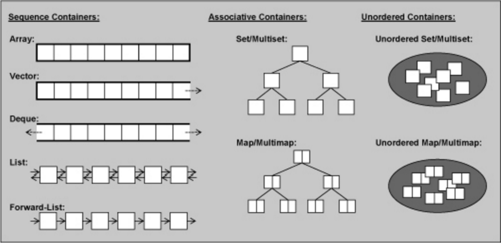
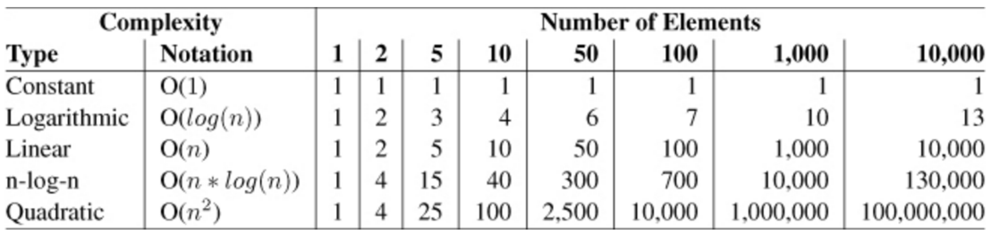

An Overview of the Standard Template Library
The heart of the C++ standard library is the STL. * Generic library * Allows users to take advantage of data structures and algorithms without knowing how they work. * All components are templates
Parts of the STL
- Containers: Used to manage collections, each container has its own advantages and disadvantages.
- Iterators: A generic way to step through the containers. Can be thought of as a type of pointer. To advance you ++itr and to access you *itr.
- Algorithms: Used to process elements of a collection. Algorithms use iterators.
- In a way, the STL is a departure from object oriented programming:
The STL separates the data from the algorithms rather than combining them. In principle, you can combine every kind of container with every kind of algorithm.
Containers
- Sequence Containers: are ordered collections in which every element has a certain position.
- Associative Containers: are sorted collections in which the position of an element depends on its value due to a certain sorting criterion. The order of insertion doesn't matter.
- Unordered Containers: are unordered collections where the only important question is if a specific element is in such a collection.
Choosing a container
When choosing a container we must think about how that container will be used.
If a container will need to be searched frequently it may be wise to use an associative container that stores the data in sorted order. In this way we can use a binary search.
On Average:
Elements | BinSearch | Linear Search |
|---|---|---|
1000 | 10 | 500 |
2000 | 11 | 1000 |
16000 | 14 | 8000 |
This is why it is important that we understand how these algorithms and data structures work.
Big-O Notation
Type | Notation | Meaning |
|---|---|---|
Constant | O(1) | The runtime is independent of the number of elements |
Logarithmic | O(log(n)) | Runtime grows logarithmically with the number of elements |
Linear | O(n) | The runtime grows at a linear ratio to n |
n-log-n | O(n*log(n)) | The runtime grows as a product if linear and log complexity |
Quadratic | O(n^2) | The runtime grows quadratically with n |
Examples
Vectors
std::vector maintains an internal array and allows a user to dynamically grow that array at the end of the array.
- allocates an initial capacity that is up to the implementation.
- We can see the current capacity with .capacity()
- We can set a capacity with .reserve()
- if the user grows the capacity greater than a vector can handle the vector class will grow the capacity. (Again how this is done is implementation specific)
- When the size grows beyond what the vector can hold all items must be copied.
- The cost of this copy is amortized if the increase of capacity is exponential.
- This means that the cost to push an element back is O(1).
- if a vector grows very large but then shrinks and likely won't grow that big again you could waste memory.
- A call to shrink_to_fit (C++11) will reduce the memory usage by freeing unused memory.
- Inserting elements at the end is fast
- Inserting elements into the middle is slow
- Data is stored contiguously (Good for caching and memcpy)
Vectors
int main() { // Create a vector containing integers std::vector<int> v = {7, 5, 16, 8}; // Add two more integers to vector v.push_back(25); v.push_back(13); // Iterate and print values of vector for(int n : v) { std::cout << n << '\n'; } }
Deque
Pronounced "deck" and is an abbreviation for "double-ended queue".
- Does not guarantee elements to be contiguous.
- Has quick insertion in the front and back. O(1) amortized
- Slow insertion in the middle. O(n)
- Random access is fast. O(1)
int main(){ std::deque<int> queue; for(auto i = 0U; i < 10; ++i) queue.push_front(i*i); while(queue.size() > 0) { std::cout << queue.back() << "\n"; queue.pop_back(); } }
Array
- Useful as a better C-Style Array.
- Fixed size, Can only change the values not the number of elements
- Size must be known at compile time.
- If initialized on the stack the data will be on the stack.
- Basically a light-weight wrapper for C-Arrays
int main(){ std::array<int, 25> a = {1,2,3,4,5}; std::array<std::string, 5> b = {"Hello", "World"}; for( const auto& item : a) std::cout << item << "\n"; for( const auto& item : b) std::cout << item << "\n"; }
List
A doubly linked list.
- Random access is slow. O(n)
- Insertion and Removal at any point is fast. O(1)
- Data is not contiguous.
- Direct access using [], or at is not possible (because it would be SLOW).
int main(){ std::list<char> abc = {'a','b','c', ..., 'x', 'y', 'z'}; for(const auto& elem : abc) std::cout << elem << " "; std::cout << "\n"; }
forward_list (C++11)
- Saves memory by only having a pointer to the next element and not the previous
- Has similar performance characteristics as a doubly link list.
- Access to the end is O(n)
- push_back and size not supported as they would be slow.
int main(){ std::forward_list<long> primes = {2,3,5,7,11,13,17}; //resize with POOR performance primes.resize(9); prints.resize(10, 99); for( auto elem: primes){ std::cout << elem << " "; } std::cout << "\n"; }
Associative Containers
- Members of the container are stored sorted
- Finding elements is really fast
- Typically implemented as a type of binary tree
The Containers
- set is a collection in which elements are sorted according to their own values.
- multiset is a collection like the set that allows elements to exist more than once.
- map is a collection of elements with key/value pairs that is sorted based on the key.
- multimap is a collection like the map that allows elements to be in the collection multiple times.
Set
struct X { X(int x = 0) :val_(x) {} bool operator<(const X& x) const { return val_ < x.val_; } int getX() const { return val_; } private: int val_; }; int main() { std::set<X> setX = { 11,2,13,42,5 }; //Compilation error if X doesn't define operator < for (const auto& elem : x) std::cout << elem.getX() << " "; std::cout << "\n"; }
MultiSet
int main() { std::multiset<X> setX = { 11,2,13,42,5,11 }; //11 is in there twice! for (const auto& elem : x) std::cout << elem.getX() << " "; std::cout << "\n"; }
Map and Multimap
- A very useful type.
- Maybe faster than unorder_map if doing a large amount of insertions and removals
- Sorted traversal
int main() { std::map<std::string, int> ages = { { "Joe", 80 },{ "Jim", 55 },{ "Barbra", 34 },{ "Sara", 38 } }; std::multimap<int, std::string> people = { {21, "Joe"}, {21, "Jim"}, {32, "Barbra"}, {44, "Tim"} }; ages["Jamie"] = 45; ages["John"] = 23; for (const auto& elem : ages) std::cout << elem.first << ", " << elem.second << " "; std::cout << "\n"; for (const auto& elem : people) std::cout << elem.first << ", " << elem.second << " "; std::cout << "\n"; }
Unordered Containers (C++11)
Unordered Containers are Hash Tables!!
- Great for lookups O(1)!!!
- Amortized constant complexity if using a good hash function
- May use a lot of memory.
Containers are very similar to associative containers minus the sorted guarantee:
- unordered set: A collection of unordered elements. Elements may only occur once.
- unordered multiset: The same as an unordered set but allows duplicates.
- unordered map: A collection of key/value pairs where the key is only allowed to be in the collection once.
- unordered multimap: The same a unordered map but allows for duplicate keys.
Iterators
In C++11 we have range based for loops but sometimes we don't want to iterate one by one through the collection (find for example.)
Iterators have the following operators:
- operator*() Returns the element at the current position.
- operator++() Lets the iterator step forward to the next element. Most iterators also allow stepping backward with --.
- operator==() and operator!=() return weather two iterators represent the same position.
- operator=() Assigns an iterator
- Iterators share an interface but are different types as they need to be specific to the type that they operate over.
- All container classes provide a begin() and end() function to get the first and last iterator

Iterators
An Example
int main(){ std::list<char> abcs = {'a','b','c', .. , 'x', 'y', 'z'}; std::list<char>::const_iterator citr; for(citr = abcs.cbegin(); citr != abcs.cend(); ++citr) //Here the ++citr matters std::cout << *citr << " "; std::cout << "\n"; std::list<char> ABCS(abcs.size()); std::transform(abcs.begin(), abcs.end(), ABCS.begin(), [](char c) {return std::toupper(c); }); //Got tired of writing loops to print. print(ABCS); //will print any iterable type. See implementation in VS 2015 }
Document may not end with a transition.